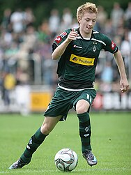
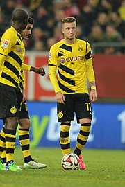

Borussia Mönchengladbach

Na temporada de 2009–10 pelo seu novo clube iria disputar a primeira divisão do Campeonato Alemão, conhecida como Bundesliga.
No iniciar de sua primeira temporada pelo Borussia Mönchengladbach, Reus era relacionado para os jogos, porém ficava quase sempre na reserva, conseguindo ser titular apenas após alguns meses de clube. No dia 28 de agosto de 2009 ele marcou seu primeiro gol pelo Gladbach na partida contra o Mainz 05.
Esse gol fez com que ganhasse confiança de seu técnico, disputando o restante da temporada como titular, mostrando grande evolução e sendo o destaque do time, começando, também, a ganhar um pequeno destaque na Alemanha. No decorrer da temporada marcou oito gols pelo seu time e ainda ajudou o Borussia Mönchengladbach distribuindo algumas assistências.
A aposta se provou boa já na primeira temporada, quando Marco Reus marcou oito gols em 33 partidas disputadas, figurando em todas as listas de revelações da Bundesliga na temporada e chamando a atenção do técnico da seleção, que o convocou em duas oportunidades, sem sucesso, para defender a Seleção Alemã.
Na temporada seguinte, foi o artilheiro do seu time, marcando dez gols. No dia 2 de novembro de 2010, renovou seu contrato até 30 de junho de 2015. No entanto, sua equipe teve uma temporada ruim e passou a maior parte do campeonato alemão nas últimas posições, lutando para não ser rebaixado.
Nessa mesma temporada, Reus recebeu, no time titular, o goleiro Marc-André ter Stegen. O guarda-redes, que futuramente viria a ser seu parceiro de Seleção Alemã, estreou contra o Colônia, em um clássico na 29ª rodada da Bundesliga.[9] Em tal jogo, Marco marcou dois gols e ajudou Marc e o elenco a conquistarem os três pontos com um goleada por 5 a 1.[10]
Na temporada 2011–12 Marco Reus se tornou o principal jogador do Gladbach e o principal jogador do Campeonato Alemão, mostrando uma evolução grandiosa e sendo eleito no final da temporada Futebolista Alemão do Ano.
Reus começou a temporada 2011–12 em boa forma, marcando sete gols em doze partidas. Seu contrato seria por mais três temporadas e tinha uma cláusula de rescisão de 18 milhões de euros.
Na pausa de Inverno do Campeonato Alemão foi especulado em vários clubes da Europa. No dia 4 de janeiro de 2012 o Borussia Mönchengladbach anunciou que Reus iria deixar o clube no final da temporada, se transferindo para o Borussia Dortmund por uma taxa de transferência de 17,5 milhões de euros, assinando um contrato de cinco de temporadas. Em 2011, antes de se transferir, Reus foi coberto de elogios pelo treinador suíço Lucien Favre:
Ele só tem 22 anos e é um dos melhores jogadores que treinei na carreira.
Borussia Dortmund

Com muito destaque pelo rival, no dia 4 de janeiro de 2012, Reus foi contratado até junho de 2017 com o clube de sua cidade natal, o Borussia Dortmund, onde passou quando jogava nas categorias de base. Entretanto, o vínculo se iniciaria somente a partir de junho.
Estreou na Bundesliga em agosto de 2012 e marcando seu primeiro gol pela equipe, na vitória do Borussia de 2 a 1 sobre o Werder Bremen. Em fevereiro de 2013, Reus marcou um hat trick na vitória sobre o Eintracht Frankfurt por 3 a 0. Fez 14 gols no campeonato alemão e 5 na liga dos campeões na temporada 2012–13.
Na sequência de suas temporadas com o time alemão, Reus passou a firmar-se como um dos principais goleadores e assistentes de sua equipe. Na equipe, o jogador dividiu elenco com diversos atacantes, como Robert Lewandowski, Mario Götze, Ciro Immobile, Erling Haaland e Pierre-Emerick Aubameyang, mas todos eles saíram da equipe em algum momento de suas carreiras e isso fez com que a torcida e a mídia tratassem Marco como um dos atletas mais leais do time, ainda que este pudesse também e aventurar em outras equipes europeias.
Pela Liga Alemã, o jogador obtivera demasiado destaque individual em diversas temporadas. Já na sua segunda época, marcou 16 gols na Liga, algo que ele só viria a superar uma vez em toda sua passagem pelo Borussia. Tantos gols fizeram com que ele empatasse com Roberto Firmino na quarta posição da artilharia. Ele ficou a quatro gols de empatar com seu colega de equipe, Robert Lewandowski, nesse quesito (que terminou a competição com 20 gols). Todavia, com suas 14 assistências, o alemão foi o jogador que mais deu passes a gol em todo Campeonato Alemão.
Na Bundesliga de 2015–16, terminou a competição com 12 gols,e passou a possuir a braçadeira de capitão em algumas oportunidades na ausência do zagueiro Hummels.A primeira vez que ele havia conseguido a faixa havia sido na primeira rodada da Bundesliga passada, quando enfrentou o Bayer Leverkusen de Son Heung-min.
Sua outra magnífica temporada de Bundesliga aconteceu na época 2018–19. Individualmente, o jogador passou a assumir a braçadeira de capitão titular, e em 27 partidas, o atacante balançou as redes adversárias em 17 oportunidades e ficou somente a cinco gols de empatar com Lewandowski na artilharia do Campeonato Alemão. Com 12 assistências, o jogador também esteve muito próximo de empatar com Jadon Sancho nesse quesito, mas teria de ter dado mais seis passes para tentos de seus companheiros.
Nessa época, o Borussia Dortmund esteve próximo de quebrar a hegemonia do Bayern de Munique na Bundesliga. A equipe chegou a liderar o campeonato por 21 rodadas, mas foram superados pelo time de Munique e deixaram o troféu escapar na 28ª jornada, após sofrerem uma goelada de 5 a 0 para o próprio time da Baviera.
Pela Bundesliga de 2019–20, Reus conseguiu uma enorme sequência de jogos sem se lesionar nenhuma vez, mas deixou de entrar em campo na 21ª rodada, justamente por problemas musculares, e não voltou mais a campo até a chegada da temporada seguinte.
A partir daí, o jogador não chegou mais a fazer temporadas onde superou a marca de dez gols, mas pôde encontrar um novo ápice na Bundesliga de 2021–22, pois ficou como o terceiro jogador que mais deu assistências (12), atrás somente de Christopher Nkunku (13) e Thomas Müller (18).
Na Bundesliga de 2022–23, Reus esteve muito próximo de conquistar sua primeira Bundesliga. O Dortmund liderou a competição em três oportunidades: na rodada 25, 29 e 33.[23] Ou seja, a equipe chegou a última jornada, a 34ª, dependendo apenas de si mesmo para conquistarem o título (ou de uma derrota do Bayern). No jogo decisivo, Marco viu o Mainz abrir uma vantagem de 2 a 0 já no primeiro tempo, mas Raphaël Guerreiro e Niklas Süle buscaram o empate no final do jogo, resultado esse que podia ter sido diferente se Sébastien Haller não tivesse errado um pênalti no primeiro tempo, isso podia dar uma vitória ao clube amarelo.
O Signal Iduna Park estava em festa com o resultado, pois o Colônia arrancava um empate com o Bayern no outro jogo, mas o clube vermelho viu Jamal Musiala desempatar a partida após sete minutos e garantir assim o 11º título consecutivo do clube da Baviera. A frustação do Borussia foi enorme, pois não conquistavam o Campeonato há 11 anos e os atletas tiveram de amargar o vice-campeonato mais uma vez.
Em março de 2023, quando disputava o Campeonato Alemão, Reus chegou a marca de 161 gols pelo Dortmund. Desse modo, como fizera dois gols no mesmo jogo, superou a marca de Michael Zorc e isolou-se na artilharia histórica do seu ti
Apesar de nunca ter conseguido o troféu do Campeonato Alemão, Reus teve momentos mais eufóricos na Copa da Alemanha. O alemão chegou a final da Copa em cinco oportunidades, e conseguiu levantar a taça nas duas últimas vezes que chegou até a decisão.
Nas primeiras três vezes que conseguiu ir até a final, o clube foi derrotado pelo Bayern (duas vezes)e pelo Wolfsburg.
Em 2017, após três vice consecutivos, a equipe conseguiu chegar até a final pela quarta vez após eliminarem o Bayern na semifinal, onde o próprio Reus chegou a marcar um gol.[28] Na decisão, o clube enfrentou o Frankfurt e derrotou a equipe pelo placar de 2 a 1.
Em 2021, Marco conseguiu fazer toda a campanha até a final da Copa pela primeira vez sem perder nenhum jogo por lesão. Na competição, fez um gol no primeiro jogo da equipe e depois marcou o seu último na semifinal. Concidentemente, todos esses jogos terminaram em 5 a 0. Na final, quando enfrentaram o RasenBallsport Leipzig, o jogador deu dois passes a gol e garantiu o título do Blackyellow após uma goleada de 4 a 1.
Por conta de suas campanhas na Copa da Alemanha e da Bundesliga, o atacante teve a oportunidade de jogar a Supercopa da Alemanha cinco vezes (em outras três oportunidades em que o Borussia participou, ele esteve lesionado e não entrou em campo), onde se sagrou campeão em três partidas.
O clube jogou todas as oportunidades com o Bayern. Na primeira vez, em 2012, perdeu para time por 2 a 1. No ano seguinte, Reus emplacou dois gols em Tom Starke e garantiu o primeiro título de sua carreira após golear o clube da Baviera por 4 a 2.
Em 2014, por conta de uma lesão, não entrou em campo, mas viu o Borussia derrotar o Bayern novamente por 2 a 0.[32] Reus só voltaria a entrar em campo pela competição em 2019, após ficar três Supercopas fora em decorrência de lesão, e viu seu time vencer o clube de Munique novamente por 2 a 0.
A equipe perdeu em 2020 e em 2021, onde Reus chegou a fazer um tento com assistência de Jude Bellingham, mas terminou a competição sem vencê-la.
Reus só disputou a Liga Europa da UEFA três vezes, sendo a sua melhor temporada a vez que disputara a competição pela primeira vez, bem como a única que conseguiu vaga à Fase de Grupos. Na época 2015–16, o jogador desempenhou bons jogos e marcou cinco gols em dez partidas. Seu melhor jogo foi nas oitavas de final, quando, no jogo de ida, balançou as redes do Tottenham duas vezes e garantiu uma vitória segura do Dortmund por 3 a 0.
O clube, no entanto, teve sua campanha interrompida já na próxima fase. Ao enfrentarem o Liverpool nos jogos de ida, arrancaram um empate dramático, em 1 a 1, após Divock Origi abrir o placar. Na volta, Reus tentou evitar a derrota do clube alemão em Anfield, já que marcou um gol, mas viu Coutinho, Origi, Sakho e Lovren impedirem o sonho da equipe de continuar. Eles deixaram a competição após um placar de 5 a 4 no agregado.
Depois disso, o time não conseguiu mais chegar até as quartas. Eles foram eliminados nas oitavas em 2018,[37] e nos 16 avos em 2022.
Em diferença aos seus poucos jogos na Liga Europa, Reus conseguia disputar a Liga dos Campeões da UEFA com muito mais frequência, apesar de ter conseguido passar das quartas de final poucas vezes. Na Liga dos Campeões da UEFA de 2012–13, Marco conseguiu ir longe em seu debut na competição. Em 13 jogos, marcou quatro gols, com destaque para seu tento nas quartas de final diante o Málaga, já que marcou um empate em 2 a 2, no jogo que terminou 3 a 2 para os alemães.
Na partida final, após derrotarem o Real Madrid na semi,[40] enfrentaram o Bayern de Munique. O jogo começou com o clube adversário abrindo o placar com Mario Mandžukić, mas, futuramente, Reus foi derrubado na área e coube a İlkay Gündoğan empatar a partida. Faltando apenas um minuto para o fim do tempo normal, Franck Ribéry deu um passe para Arjen Robben dar fim ao jogo e garantir o título do time vermelho que estava sob o comando de Jupp Heynckes.
Após esse vice-campeonato, o Borussia chegou a participar de diversas edições, mas não conseguiu chegar tão longe. A equipe acumulou algumas eliminações durante os anos, sendo a de 2020 uma das mais sofridas, já que conseguiram vencer o primeiro jogo do PSG por 2 a 1, mas perderam a partida de volta por 2 a 0 no Parc des Princes.
Em 2021, o clube chegou até as quartas de final, mas perderam os dois jogos para o Manchester City de Josep Guardiola e deram adeus à competição. Reus chegou a marcar um gol na partida de ida[43], mas o clube inglês repetiu o mesmo resultado no jogo de volta (2 a 1), e consolidou-se entre os semifinalistas.
A carreira de Marco no time alemão foi vitoriosa e marcante, contudo, o jogador passou por diversas situações dramáticas ao longo de seus jogos. Mesmo quando mais jovem, nos primeiros anos de Dortmund, o atacante sofria com sérios problemas de lesão. Ao todo, Reus chegou a perder o equivalente a mais de três temporadas de Bundesliga inteiras por conta desses desconfortos. Tanto tempo tratando de tais problemas fizeram ele passar mais de mil dias no departamento médico se contada todas as suas injúrias.
Em 2014, o jogador sofreu uma das lesões mais relevantes de sua carreira. Ele defendia a Seleção Alemã em um amistoso contra a Armênia quando quando machucou seu tornozelo esquerdo. Isso fez com que ele tivesse de passar por um tratamento que o tirou da Copa do Mundo de 2014. Nessa edição de Copa, a Alemanha, seleção que ele defendia, sagrou-se Campeã.
Reus é casado com a modelo alemã Scarlett Gartmann. Juntos, eles tiveram sua primeira filha em março de 2019.Em março de 2020, ambos doaram 500.000 euros para pessoas e pequenas empresas necessitadas em sua cidade natal, Dortmund, durante a pandemia COVID-19.
Em dezembro de 2014, Marco Reus foi multado em 540 000 de euros por dirigir novamente sem carteira de motorista.O jogador foi parado pela polícia diversas vezes e recebeu multas por excesso de velocidade em pelo menos cinco ocasiões desde 2011, até que as autoridades percebessem que ele estava dirigindo sem uma carteira de motorista desde aquela época.